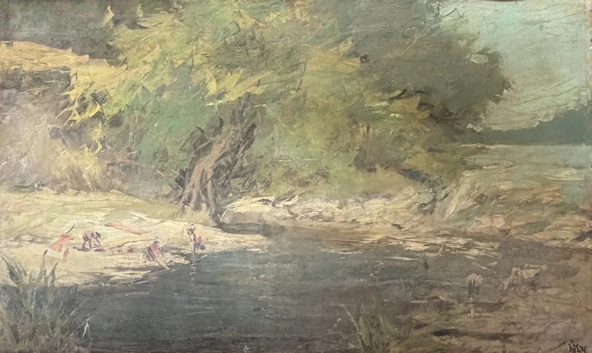
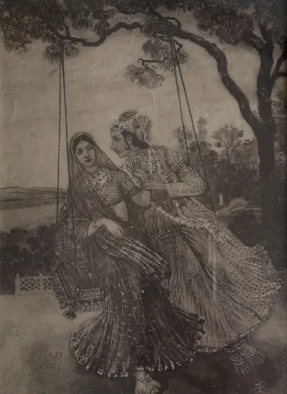

The collection · Painter of everyday India
Madhav Satwalekar
1915–2006
A J. J. School painter who trained in Florence, London and Paris, and came home to paint village lanes and riverbanks.

The Riverbank
Oil on canvas
His life
- 1915Born in Lahore, on 13 August
- 1935Wins the Mayo Medal, the J. J. School's highest award
- 1937Leaves to study in Florence, London and Paris
- 2006Dies
Swipe along the thread
His story
Europe, and then home
Madhav Satwalekar was born in Lahore, where his father, the painter and Vedic scholar S. D. Satwalekar, had a studio, and grew up in the princely state of Aundh.
He won the J. J. School's Mayo Medal in 1935, then spent three years at the academies of Florence, London and Paris. Back in India he painted landscapes, myths and the everyday life of ordinary people, in oil and watercolour.
to come
Where he stands
The Bombay School's next generation
Trained in the J. J. School's tradition, he took it to Europe and back.

Before him M. V. Dhurandhar 1867–1944 The J. J. School's first Indian director. This page
Madhav Satwalekar
1915–2006
A J. J. School painter who trained in Florence, London and Paris, and came home to paint village lanes and riverbanks.
This page
Madhav Satwalekar
1915–2006
A J. J. School painter who trained in Florence, London and Paris, and came home to paint village lanes and riverbanks. Alongside him
A. A. Almelkar
1920–1982
Another J. J. School painter of his generation.
Alongside him
A. A. Almelkar
1920–1982
Another J. J. School painter of his generation.
In the house
Satwalekar at House of Legends
Four oils in our care: a riverbank, a hay cart, a banyan and a village lane.
Write to us
See Satwalekar in person
Every work in the house can be seen by appointment, with its record and a condition report ready for you. If your family has kept a work by Madhav Satwalekar, we would be glad to hear about it too.